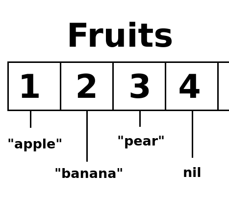
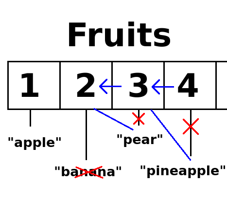

Tables are basically lists in which we can store values.
You create a table with curly brackets ({ }):
function love.load()
fruits = {}
end
function love.update()
end
function love.draw()
endWe just created a table called fruits. Now we need to store values inside the table. There are multiple ways to do this.
One way is to put the values inside the curly brackets.
function love.load()
--Each value is separated by a comma, just like with parameters and arguments
fruits = {"apple", "banana"}
endWe can also use the function table.insert. The first argument is the table, the second argument is the value we want to store inside that table.
function love.load()
--Each value is separated by a comma, just like with parameters and arguments
fruits = {"apple", "banana"}
table.insert(fruits, "pear")
endSo now after love.load our table will contain "apple", "banana" and "pear". To prove that, let's put the values on screen. For that we're going to use love.graphics.print.
function love.draw()
--Arguments: (string, x-position, y-position)
love.graphics.print("Test", 100, 100)
endWhen you run the game, you should see the text "test" written. We can acces the values of our table by writing the tables name, followed by brackets ([ ]) (So not curly but square brackets!). Inside these brackets, we write the position of the value we want.

Like I said, tables are a list of values. We first added "apple" and "banana", so those are on the first and second position in the list. Next we added "pear", so that's on the third position in the list. On position 4 there is no value (yet), since we only added 3 values.
So if we want to print "apple", we have to get the first value of the list.
function love.draw()
love.graphics.print(fruits[1], 100, 100)
endAnd so now it should draw "apple". If you replace the [1] with [2], you should get "banana", and with [3] you get "pear".
Now we want to draw all 3 fruits. We could use love.graphics.print 3 times, each with a different table entry...
function love.draw()
love.graphics.print(fruits[1], 100, 100)
love.graphics.print(fruits[2], 100, 200)
love.graphics.print(fruits[3], 100, 300)
end...but imagine if we had 100 values in our table. Luckily, there's a solution for this: for-loops!
A for-loops is a way to repeat a piece of code a certain amount of times.
You create a for-loop like this:
function love.load()
fruits = {"apple", "banana"}
table.insert(fruits, "pear")
for i=1,10 do
print("hello", i)
end
endIf you run the game you should see it prints hello 1, hello 2, hello 3, all the way to 10.
To create a for-loop, first you write for. Next you write a variable and give it a numeric value. This is where the for-loop starts. The variable can be named anything, but it's common to use i. This variable can only be used inside the for-loop (just like with functions and parameters). Next you write the number to which it should count. So for example for i=6,18 do will start at 6 and keep looping till it's at 18.
There is also a third, optional number. This is by how much the variable increases. for i=6,18,4 do would go: 6, 10, 14, 18. With this you can also make for-loops go backwards with -1.
Our table starts at 1 and has 3 values, so we will write:
function love.load()
fruits = {"apple", "banana"}
table.insert(fruits, "pear")
for i=1,3 do
print(fruits[i])
end
endWhen you run the game you'll see that it prints all 3 fruits. In the first loop it prints fruits[1], then in the second loop fruits[2]and finally in the third loop fruits[3].
But what if we add or remove a value from a table? We would have to change the 3 into another number. For that we use #fruits. With the #-sign, we can get the length of a table. The length of a table refers to the number of things in that table. That length would be 3 in our case, since we have 3 entries: apple, banana, and pear in our fruits table.
function love.load()
fruits = {"apple", "banana"}
table.insert(fruits, "pear")
print(#fruits)
--Output: 3
for i=1,#fruits do
print(fruits[i])
end
endLet's use this knowledge to draw all 3 fruits.
function love.draw()
for i=1,#fruits do
love.graphics.print(fruits[i], 100, 100)
end
endIf you run the game you should see it draws all 3 fruits, expect they're all drawn on the same position. We can fix this by printing each number on a different height.
function love.draw()
for i=1,#fruits do
love.graphics.print(fruits[i], 100, 100 + 50 * i)
end
endSo now "apple" will be drawn on the y-position 100 + 50 * 1, which is 150. Then "banana" gets drawn on 200, and "pear" on 250.
If we were to add another fruit, we won't have to change anything. It will automatically be drawn. Let's add "pineapple".
function love.load()
fruits = {"apple", "banana"}
table.insert(fruits, "pear")
table.insert(fruits, "pineapple")
endWe can also remove values from our table. For that we use table.remove. The first argument is the table we want to remove something from, the second argument is the position we want to remove. So if we want to remove banana, we do the following:
function love.load()
fruits = {"apple", "banana"}
table.insert(fruits, "pear")
table.insert(fruits, "pineapple")
table.remove(fruits, 2)
endWhen you run the game you'll see that banana is no longer drawn, and that pear and pinapple have moved up.

When you remove a value from a table with table.remove, all the following items in the table will move up. So what was on position 3 is now on position 2 in the table. And what was on position 4 is now on position 3.
You can also add or change the values inside the table directly. For example, we can change "apple" into "tomato":
function love.load()
fruits = {"apple", "banana"}
table.insert(fruits, "pear")
table.insert(fruits, "pineapple")
table.remove(fruits, 2)
--The value of position 1 in the table becomes "tomato"
fruits[1] = "tomato"
endBack to the for-loops. There is actually another way, and an easier way to loop through the table. We can use an ipairs loop.
function love.load()
fruits = {"apple", "banana"}
table.insert(fruits, "pear")
table.insert(fruits, "pineapple")
table.remove(fruits, 2)
fruits[1] = "tomato"
for i,v in ipairs(fruits) do
print(i, v)
end
--Output:
--1, "tomato"
--2, "pear"
--3, "pineapple"
endThis for-loop loops, or what we also call iterates, through all the values in the table. The variables i tells us the position of the table, v is the value of that position in the table. It's basically a shorthand for fruits[i]. For example, in the first iteration the values for the variables i would be 1 and v would be "apple". In the second iteration, i and v would be 2 and "pear" respectively. Let's use ipairs for drawing our tables.
function love.draw()
--i and v are variables, so we can name them whatever we want
for i,frt in ipairs(fruits) do
love.graphics.print(frt, 100, 100 + 50 * i)
end
endTables are lists in which we can store values. We store these values when creating the table, with table.insert, or with table_name[1] = "some_value". We can get the length of the table with #table_name. With for-loops we can repeat a piece of code a number of times. We can also use for-loops to iterate through tables.